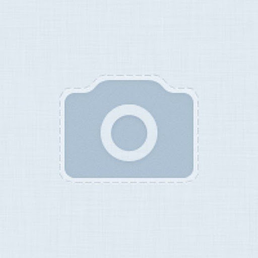

Red Star OS - северокорейская ОС, созданная чисто для своей родины - Северной Кореи.Единственное, что мы знаем - она до сих пор существует. Да ладно, информации на самом деле достаточно.Она основана на Fedora, разработка началась с 2002 года, до этого там сидели на англоязычных версиях Windows.
Первая версия появилась на свет в 2008 году. С тех пор Windows заменили на свою систему с повышенной безопасностью и "патриотичностью".
В данной системе также существует система водяных знаков для различных флешек для отслеживания теневого оборота иностранного контента.Продукт довольно специфичный, поэтому отзывы и рейтинг недоступны.

Представители КНДР★★★★★ 제품에 관심을 가져 주셔서 감사합니다,당신은 당신에 대한 우리의 신뢰를 얻었습니다. Перевод: Благодарим вас за проявленный интерес к нашему продукту, вы заслужили наше доверие к вам.
Отзывы недоступны, так как данный продукт очень специфичный и за сайтом установлено наблюдение корейской народно-демократической республикой.